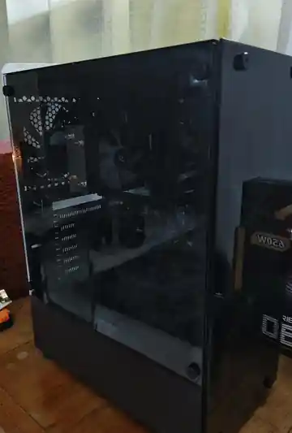
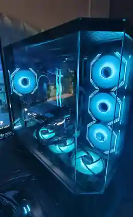
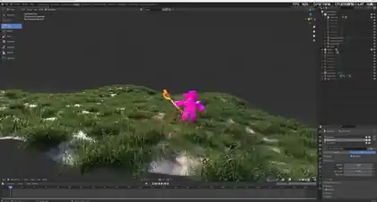

Performance Tasks & Activities
TO UPLOADOne compiled PDF containing programming machine problems, seatwork, activities, recitations, and screenshots of Java outputs.
PDF COLLECTIONExploring programming and digital creativity through PC building, graphic design, 3D modeling, and hands-on technology projects.
I'm Justin Boie E. Lucero, a first-year BS Information Technology student at Jose Rizal University in Mandaluyong City, Philippines.
I’m passionate about technology and digital creativity. I enjoy building PCs, designing pubmats and digital graphics, modeling 3D objects in Blender, and editing videos. I’m always eager to explore new tools and develop skills that help me turn ideas into better work.
This e-portfolio documents my learning in Computer Programming 1 alongside selected technology projects and experiences. It is a work in progress: coursework, project details, and reflections will continue to grow as I gain experience.
Selected coursework and project work from my learning journey. This section will be updated with completed submissions, documentation, and demonstrations as they become available.
One compiled PDF containing programming machine problems, seatwork, activities, recitations, and screenshots of Java outputs.
PDF COLLECTIONDetailed reports, screenshots, procedures, and outcomes for relevant projects, where applicable.
PDF DOCUMENTProject demonstration, walkthrough, or presentation video, if required or available.
VIDEO / LINKThese projects reflect my interest in applying technology to practical needs. The summaries describe each project's direction; implementation details, my specific role, results, and media can be added as the documentation is finalized.
Assistive mobility concept
A project exploring how electronics and embedded programming can support mobility and accessibility. The work centers on a microcontroller-based approach to wheelchair control, with attention to motor movement, obstacle awareness, and accessible ways for a user to interact with the system.
Automated waste-sorting concept
A project exploring automation for waste sorting. It brings together sensor input and mechanical movement to investigate how a system can identify material categories and direct items toward the appropriate section.
A few snapshots of the work I enjoy outside the classroom—from assembling PC builds to exploring 3D modeling and visual design.
Hands-on interest in PC components, case layouts, and custom desktop builds.


Experimenting with 3D objects, materials, and scene composition in Blender.

Publication material for “Exploring Chinatown — Food Fiesta in Binondo Manila.”
A place to share involvement, skills, and recognition beyond everyday coursework. Add dates and supporting certificates as you collect them.
Experience collaborating on robotics projects, combining hardware assembly, coding, troubleshooting, and teamwork.
Add titles, organizers, dates, learnings, and certificates from seminars or training sessions you've attended.
Awaiting entriesInclude campus organizations, volunteer activities, leadership roles, and community participation.
Awaiting entriesDocument awards, competition participation, distinctions, and other achievements with supporting details.
Awaiting entriesAdd relevant immersion, internship, or professional experience, if applicable.
Optional sectionThree distinct term reflections for Computer Programming 1. These are structured writing prompts — replace them with your own real experiences and lessons from each term.
Write about your first experiences in Computer Programming 1: the topics introduced, skills you practiced, challenges you encountered, and what you learned from overcoming them.
Prompt: What did I learn in the prelim term, and how did I grow as a beginner programmer?
This portfolio is a living record of my progress. Every activity, project, and reflection is another step toward the developer I want to become.
View my GitHub ↗